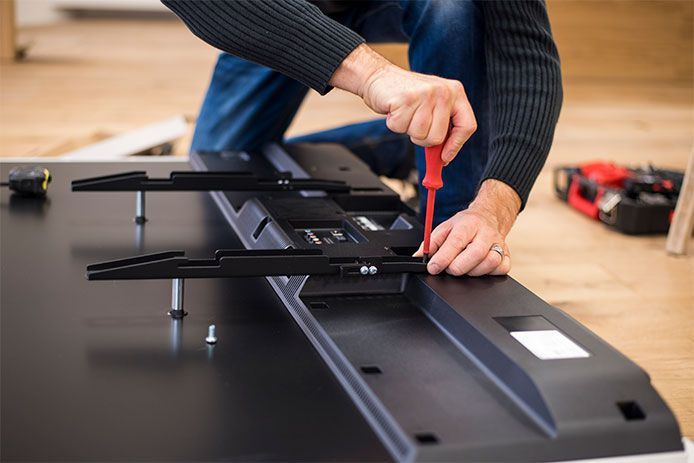
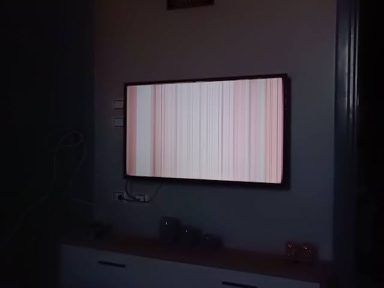
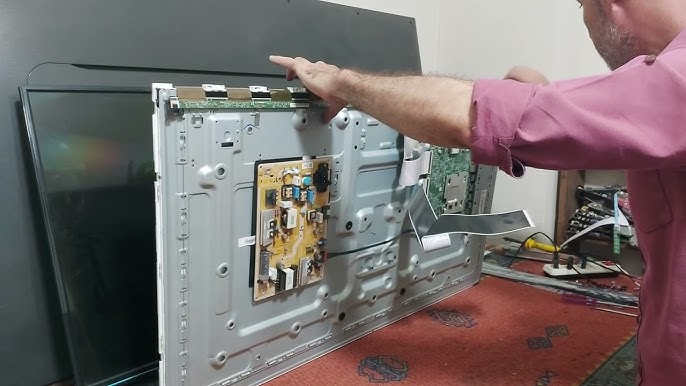

احدث المقالات، نصائح الحفاظ على الشاشات، وطرق اكتشاف الأعطال وحلها بنفسك

تعرف على أهم النصائح اليومية لحماية شاشتك السمارت والـ LED من أعطال الإضاءة وتقلبات التيار الكهربائي...
قراءة المقال
ما هو سبب ظهور الخطوط الملونة على شاشة التلفزيون؟ وهل يمكن إصلاحها أم تتطلب تغيير البانل بالكامل؟...
قراءة المقال
عندما تعمل الشاشة ويظهر الصوت ولكن الشاشة مظلمة تماماً، تعرف على عطل الباك لايت وكيفية إصلاحه...
قراءة المقال.jpg)
خطوات عملية وسهلة لحل مشكلة عدم اتصال التلفزيون الذكي بالإنترنت أو بطء التطبيقات مثل نتفليكس اليوتيوب...
قراءة المقال.jpg)
متى تستدعي الفني للإصلاح المنزلي الفوري ومتى تستدعي نقل الشاشة للمركز الرئيسي لفحص البانل المعقد...
قراءة المقال
دليلك الشامل لاختيار حجم الشاشة المناسب لمسافة الجلوس، والفرق بين تقنيات OLED و LED و QLED بدقة...
قراءة المقالفريقنا المتخصص جاهز لخدمتك على مدار الساعة. اتصل الآن واحصل على فحص فوري وخدمة منزلية مع ضمان معتمد.